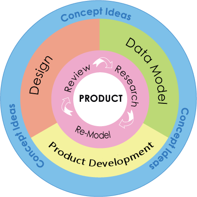
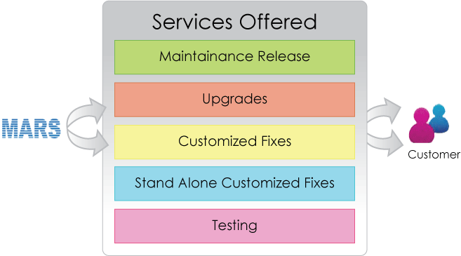

Service Details
Businesses need fast, cost-effective IT services to stay competitive and meet evolving customer demands. MARS delivers proven solutions that accelerate time-to-market, drive transformation, and enhance business results.
Outsourced Product Development
MARS team specializes on OPD by complementing the existing R&D teams of clients. Providing high value in terms of product realizations and augmenting the existing team structure in delivering high quality products by aligning to the core development values of the client , MARS team prides in treating client commitments as its own.
Successful software product development methodologies coupled with seamless delivery, constant feedback and process monitoring mechanisms ensure not only a software product but also a sense of product ownership.
MARS specializes in product development and focuses extensively on Product engineering approach by working as an extended arm to the clients Product Engineering Team. We assist our clients in defining product roadmaps and also collaborate in all stages of offshore product development life-cycle engineering services.
With a combination of onsite product engineers participating in product roadmaps and offshore engineering services, MARS assists its Clients’ to launch superior products ahead of their competition by providing them on-demand technical expertise.
Our offer of expertise includes end-to-end PLM portfolio services in the convergence spectrum – from product ideation to product sustenance activities.
Rapid Prototyping

Come to us with a product idea and we will provide the building blocks and you can witness the skeleton created with rapid prototyping development.. Once you are satisfied, our team can go the extra mile to create a full blown product, thus giving concrete physical shapes to your vision.
MARS has built a repertoire of skills involved in productizing and is aware of nuances involved in new product initiatives. We ensure that you remain focused on your current commitments, while we drill on blueprints for the product. Dual benefits of accomplishing the product prototype without de-railing your present resources from their assigned tasks while meeting the existing deadlines.
Our team initially runs through a brain-storming session identifying the necessary software ranging from UI components to back end databases. It then prepares a feasibility plan with details on the different stages of prototyping and necessary components in each stage. Off the Shelf softwares or any existing 3rd party softwares are evaluated for integration to ease the development effort and thus reduce development cost. All these investigations are thoroughly documented and presented to you. Once approved, the plan goes into rolling and is fed into the development team. The development team carries forward the plan creating base prototypes according to the schedules. These prototypes are architected to be incremental in nature thus evolving into a final product in the later phases.
Client Requirement Analysis
In the initial stage of the process, the client requirement analysis at MARS is aimed to define the required functionality, environment and interface of the future product as well as to create its detailed functional specifications. Our experts quickly grasp and analyze the client's expectations and vision in the product development. Furthermore, MARS always thrive to go 'above and beyond' to meet the client's most challenging needs.
Project Planning
Software development can at times be inherently complex and risky. It always requires careful planning which guarantees the project completion without deviation from the targeted goal and increases its visibility to the client and the management. For MARS planning means an opportunity to re-assess all risks, establish priorities, select the best technical solutions, finalize schedules & resources and draw deadlines.
Project Planning
MARS executes project planning in compliance with the client's time and budget requirements. Our team of software engineers is fully dedicated to the deadlines to guarantee the timely delivery of services and solutions. Budget requirements are another important priority that MARS is committed to, and outsourcing with us will save the client a significant portion of project cost. Our clients are provided with an always-ready access to the project status.
Software Product Development
Today is the time of global competition and product life-cycle acceleration, when the need to get new products to market faster is more compelling than ever. What was once considered innovative and ground-breaking is now out-of-date and ineffective. At MARS, the logically planned software development process is future oriented.
And our expert teams combine research and development activities with cutting edge technologies to create brand new products and product categories. We also know-how to realise client's ideas successfully with sizable market-gains within less time, less risk and less cost. The client's approved functional specifications and project plan serve as the cornerstone for creation of client-tailored products and solutions.
Our highly skilled and talented workforce as well as the world-class infrastructure,state-of-the-art tools and technologies make MARS, the company of first choice for both custom software application development and product re-engineering and customization services.
| Area | Skill Sets |
| Frameworks | ACE, Drupal, Jhoomla, .NET |
| Domains | Data Networking, Telecom, Application Development, eGov |
| Design Paradigms | OOPS Concepts, Object Oriented Design Paradigms, Modular Paradigms |
| Programming & Scripting Languages | C/C++, VC++, VB, Java, JSP, Perl, Expect, TCL/TK, XML, Shell Scripting |
| Other Tools | IBM Rational Rose RT, IBM Rational Clear quest, Bugzilla, IBM Rational Purify, Tornado IDE, IBM Rational Clear case, Visual Source Safe, CVS, GDB, MS Project |
Continuing Engineering

We at MARS understand the importance of getting to market fast with a high quality product. This is why our support team is organized to respond quickly and accurately. We strive to provide a swift and comprehensive respond with a support team that is available both online and via telephone, to help our customers bring their product to the market fast and hassle free.
Services offered
MARS offers its customers the following Services:
- Maintenance Releases. From time to time, MARS makes Maintenance Releases generally available for the benefit and use of its customers. A Maintenance Release is a revision of the Software that contains bug fixes and minor enhancements.
- Upgrades. From time to time, MARS makes Upgrades generally available for the benefit and use of its customers. An Upgrade is a version of the Software that contains bug fixes, and major enhancements or improvements.
- Customized Fixes. MARS will use commercially reasonable efforts to correct High Severity and/or Medium Severity Errors by providing the customer with Customized Fixes.
- Stand-Alone Customized Fix. Every Customer may request for a single Customized Fix to correct a specific Error (Stand- Alone Customized Fix). MARS shall approve each such request, on a case-by-case basis.
Technical Support
MARS offers its customers Technical Support Services during MARS Business Hours, through online and telephone system. This Online Support Center helps MARS Support Team track your queries and attend to your requests faster. You may also contact the MARS Support Team via e-mail and telephone.
Technical Support Services may include answering technical questions regarding the Software; providing advice regarding the use, operation and development of the Software; and when applicable, providing workarounds, solutions and/or work plans for resolution of Errors reported by a customer.
Field Support
Many times our MARS Field support team will work with our customers to implement new versions, changes to their existing installations or other requests. MARS has created a "handoff" process between consulting and customer support where all the details relevant to your MARS implementation are transferred, saving you time and trouble when you call.
Defect Tracking
All the reported customer requests are stored in MARS repository. This repository will be used to track all the customer defects as well as to find solutions to common problems, plus tips and work arounds. This repository is available 24x7 and is constantly updated in order to get the latest information to all MARS engineers.
Training
MARS offers its customers a basic training session on "how to" use the products. The training session will take place at the customer's site or other locations as decided by the MARS. Customers need to place a request in order to avail this service.
| Area | Skill Sets |
| Frameworks | ACE, Drupal, Jhoomla, .NET |
| Domains | Data Networking, Telecom, Application Development, eGov |
| Design Paradigms | OOPS Concepts, Object Oriented Design Paradigms, Modular Paradigms |
| Programming & Scripting Languages | C/C++, VC++, VB, Java, JSP, Perl, Expect, TCL/TK, XML, Shell Scripting |
| Other Tools | IBM Rational Rose RT, IBM Rational Clear quest, Bugzilla, IBM Rational Purify, Tornado IDE, IBM Rational Clear case, Visual Source Safe, CVS, GDB, MS Project |
Emerging Technologies
Page4 content here...
Independent Testing Services
Page5 content here...